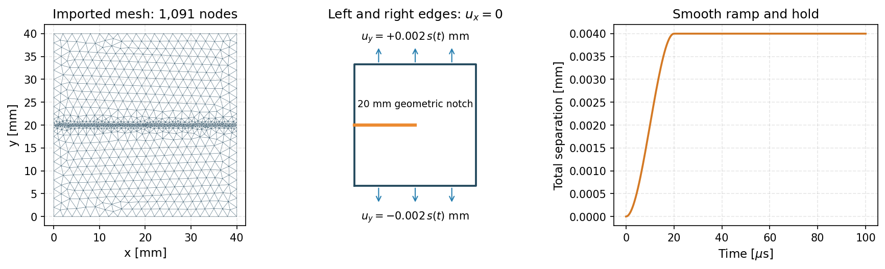
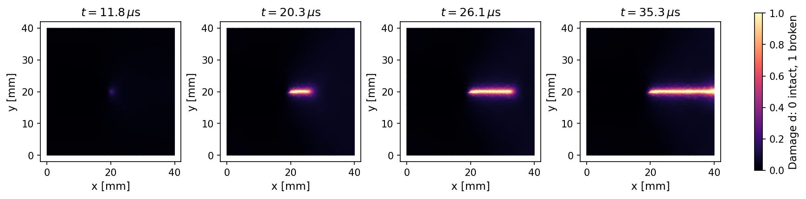
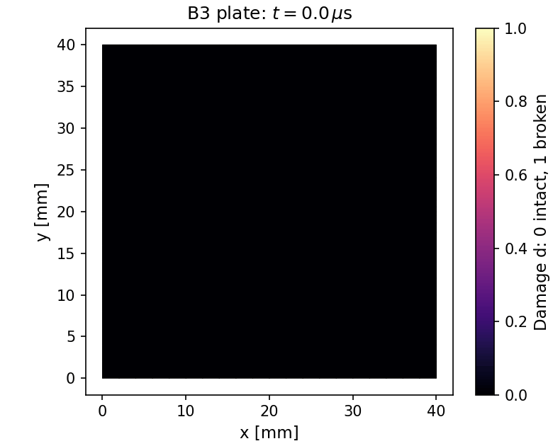
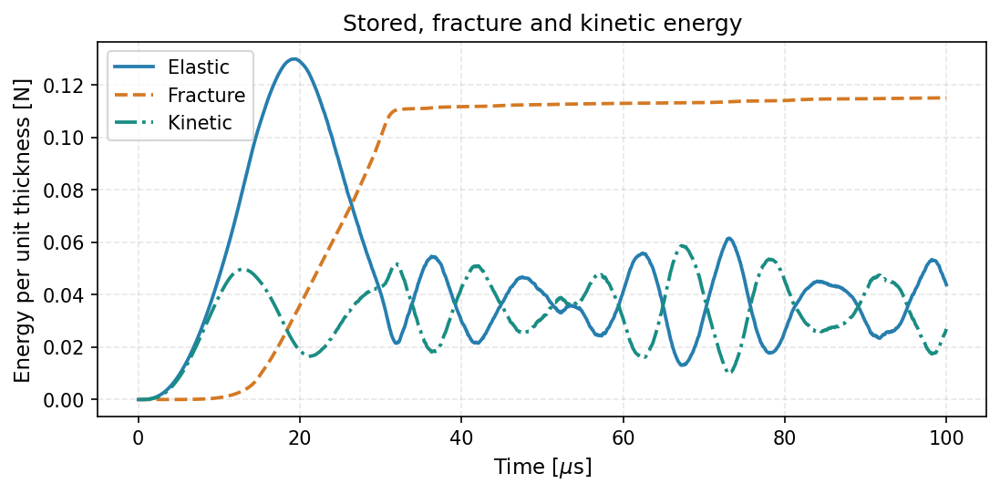

Practical 1: Simulate a crack crossing a plate#
Learning objective. Import a notched-plate mesh, understand its supports and loading, run a short dynamic PhAST calculation, and interpret the crack evolution and energy components.
Predict first. Under vertical tension, where will the crack grow from a horizontal notch, and how might its opening change the stored elastic energy?
Work through the cells in order. Expand setup and figure details when you want to inspect the complete implementation.
{'environment': 'local', 'python': '3.10.18', 'course_revision': '48ae30794de3da1f4242bfbefff124dfd0d9a594', 'versions': {'torch': '2.8.0', 'numpy': '2.2.6', 'scipy': '1.14.1', 'matplotlib': '3.10.8', 'nbformat': '5.10.4'}, 'setup_seconds': 1.103}
1. The specimen and physical model#
The 40 mm square glass plate has a 20 mm geometric notch. The notch is already a cut in the imported mesh. The phase-field variable starts at \(d=0\) and increases towards \(d=1\) as a diffuse crack forms in the remaining ligament.
PhAST solves the discrete balance of momentum with an explicit central-difference update, then an implicit damage update:
Here \(\mathbf M\) is the mass matrix, \(\mathbf u\) is displacement and \(n\) indexes physical time. The spectral split separates tensile and compressive elastic energies. The AT2 energy is
where \(g(d)=(1-\eta)(1-d)^2+\eta\), \(G_c\) is fracture toughness, \(\ell\) is the regularisation length and \(\eta\) is residual stiffness. The history of tensile energy supplies the irreversible damage update.
Open the inputs#
The portable YAML file contains the material, supports, loading and numerical settings. Its mesh is the checked public PhAST B3 example. Keeping that mesh fixed makes the calculation reproducible across computers.
from day2_helpers.dynamic_practical import case_files, load_case, setup_figure
config_path, mesh_path = case_files()
config = load_case()
print("Mesh:", mesh_path.name)
print("Material:", config["material"])
print("Solver:", config["solver"])
Mesh: mesh.msh
Material: {'E': 32000.0, 'nu': 0.2, 'Gc': 0.003, 'l0': 0.5, 'rho': 2.45e-09, 'energy_split': 'spectral', 'pf_model': 'AT2', 'eta_residual': 1e-06, 'plane_stress': False}
Solver: {'solver_type': 'explicit', 'time_integrator': 'central_difference', 'dt_safety': 0.8, 'damage_every': 1, 'bounds_method': 'projected_cg', 'use_multigrid': False, 'preconditioner': 'jacobi', 'damage_tol': 1e-05}
Inspect the mesh, supports and load#
The left and right edges have \(u_x=0\). The top and bottom move vertically by \(+0.002\,s(t)\) mm and \(-0.002\,s(t)\) mm. The smooth ramp \(s(t)\) rises from zero to one over \(20\,\mu\)s, then remains constant until \(100\,\mu\)s. The 0.5 mm regularisation length determines the diffuse crack-band scale.
fig = setup_figure()
display_figure(fig, alt="B3 imported triangular mesh, geometric notch, supports and smooth opening ramp")
plt.close(fig)

2. Run the plate calculation#
Run one baseline calculation on the CPU. The public solver updates momentum and damage at each time step; the projected damage solve enforces \(d^{n+1}\ge d^n\). Numerical checks accompany every update. The calculation exports sampled fields, energy components and a results table into its own output folder.
The helper starts the public PhAST command with the visible configuration. Expand its Python source to inspect the subprocess, residual checks and output routines. The solver subprocess has a 95-second safety cap; the complete uninterrupted practical is tested against a 120-second computation budget after environment setup.
import tempfile
from day2_helpers.dynamic_practical import run_case, load_results
practical_dir = assets_dir() / "classroom" / "01_dynamic"
practical_dir.mkdir(parents=True, exist_ok=True)
output_dir = Path(tempfile.mkdtemp(prefix="b3-", dir=practical_dir)) / "results"
output_dir = run_case(output_dir, timeout_seconds=95)
fields, summary = load_results(output_dir)
print({key: summary[key] for key in ["nodes", "elements", "steps", "sampled_states", "all_checks_pass"]})
{'nodes': 1091, 'elements': 1940, 'steps': 6116, 'sampled_states': 154, 'all_checks_pass': True}
3. Follow the computed crack#
The images use the same damage colour scale throughout. Locate the initial notch, then follow the high-damage band into the remaining 20 mm ligament. The four fields below are selected from the saved calculation.
from day2_helpers.dynamic_practical import result_figure
fig = result_figure(output_dir)
display_figure(fig, alt="Four actual B3 damage states showing initiation and propagation across the ligament")
plt.close(fig)

Animate the result#
Each frame below is a sampled solver state. Frames emphasise the first \(40\,\mu\)s, when the crack initiates and traverses the plate, and include the final \(100\,\mu\)s hold state. Playback speed is selected for viewing.
from day2_helpers.dynamic_practical import make_animation
gif_path = make_animation(output_dir, frames=40)
display(Image(filename=str(gif_path), alt="Computed B3 crack propagation from notch to plate edge"))

4. Interpret the fields and energy#
Stored elastic energy changes as the plate is loaded and the crack opens. Fracture energy measures the diffuse crack contribution, and kinetic energy describes motion. These are energies per unit specimen thickness. A complete energy balance additionally requires the work done at the moving boundaries.
from day2_helpers.dynamic_practical import energy_figure
fig = energy_figure(output_dir)
display_figure(fig, alt="Stored elastic, fracture and kinetic energy versus physical time")
plt.close(fig)

Read and export a results table#
The CSV records the time, maximum damage, displacement and forward extent of nodes with \(d\ge0.95\) within a 2 mm strip along the ligament. The extent is a threshold-dependent, mesh-resolved descriptor. The NPZ stores the mesh and sampled displacement/damage fields for further plotting; Zarr stores the public solver’s trajectory outputs.
import csv
from IPython.display import HTML
with (output_dir / "results.csv").open() as stream:
rows = list(csv.DictReader(stream))
selected_rows = [rows[i] for i in np.linspace(0, len(rows)-1, 6, dtype=int)]
head = "<tr><th>Time [µs]</th><th>Maximum d</th><th>Extent [mm]</th></tr>"
body = "".join(f"<tr><td>{float(r['time_us']):.2f}</td><td>{float(r['maximum_damage']):.3f}</td><td>{float(r['extent_d095_mm']):.2f}</td></tr>" for r in selected_rows)
display(HTML("<table>" + head + body + "</table>"))
print("Saved files:", ", ".join(sorted(p.name for p in output_dir.iterdir() if p.is_file())))
| Time [µs] | Maximum d | Extent [mm] |
|---|---|---|
| 0.00 | 0.000 | 0.00 |
| 19.61 | 1.000 | 4.60 |
| 39.88 | 1.000 | 20.00 |
| 59.51 | 1.000 | 20.00 |
| 79.79 | 1.000 | 20.00 |
| 100.00 | 1.000 | 20.00 |
Saved files: crack_propagation.gif, diagnostics.csv, results.csv, run.log, runtime.json, summary.json, trajectory.npz
Worked example · P1-R01 · A short propagating crack#
The computed fields above follow initiation at the geometric notch and growth through the remaining ligament. Read the field sequence together with the elastic, fracture and kinetic energy curves. The fixed-mesh half-time-step comparison records temporal sensitivity; spatial refinement is a further study.
Animation · P1-A01 · Geometry to damage#
The mesh and support diagram introduces the specimen. The 40-frame GIF selects actual saved states through initiation and propagation, then includes the final hold state. The static snapshots and numerical CSV remain available for independent interpretation.
For a new geometry, create the mesh with Gmsh, identify boundary sets, then follow the same material → supports → loading → solve → inspect sequence. The supplied public mesh makes this first practical short and reproducible.
Key takeaways#
Geometry, material properties, supports and loading jointly define the fracture problem.
The phase field resolves a continuous damage band whose width depends on regularisation and mesh resolution.
The dynamic calculation couples explicit momentum updates with constrained implicit damage updates.
Fields, animation, energy curves and numerical tables describe complementary aspects of one simulation.
Exercises#
Try each question before opening the hint or worked solution. Keep the original calculation as your reference.
Exercise 1: Resolve the time and length scales#
How many numerical updates occur during the \(20\,\mu\)s ramp? Compare the regularisation length with the plate width. Explain why the smallest mesh element affects explicit computational cost.
Hint 1
Read summary['dt_seconds'] and use \(N_{\mathrm{ramp}}\simeq t_{\mathrm{ramp}}/\Delta t\). The explicit stability step scales with element size divided by elastic-wave speed.
Worked solution 1
With \(\Delta t\simeq1.6353\times10^{-8}\) s, the ramp spans approximately 1,223 updates. The regularisation length is \(0.5/40=0.0125\) of the plate width. A smaller element reduces the stable time step and increases the update count for the same physical duration. Resolution along the whole crack path must also be considered when assessing a mesh.
Exercise 2: Measure a crack descriptor from saved fields#
Use the saved fields to compare the forward extent obtained with thresholds \(d\ge0.5\) and \(d\ge0.95\). At an intermediate time, explain why the two values can differ. Reuse the completed simulation.
Hint 2
Select nodes with \(x>20\) mm and \(|y-20|\le1\) mm, then apply each threshold to one row of fields['damage']. Subtract 20 mm from the largest selected x-coordinate.
Worked solution 2
The lower threshold includes the partially damaged process zone ahead of the highly damaged band, so its extent can be greater. Both values are discrete descriptors of a diffuse field. Report the threshold, strip and mesh when presenting either measure as a crack-length estimate.
Continue studying#
The complete source, attribution and bundled licences remain in the course repository.
Session timing#
Elapsed session time includes reading and pauses between cells. The course runner measures uninterrupted computation separately from installation.
session_seconds = time.perf_counter() - session_started
print({"setup_seconds": setup_receipt["setup_seconds"],
"elapsed_session_seconds": round(session_seconds, 2),
"environment": setup_receipt["environment"], "torch": torch.__version__})
{'setup_seconds': 1.103, 'elapsed_session_seconds': 24.61, 'environment': 'local', 'torch': '2.8.0'}